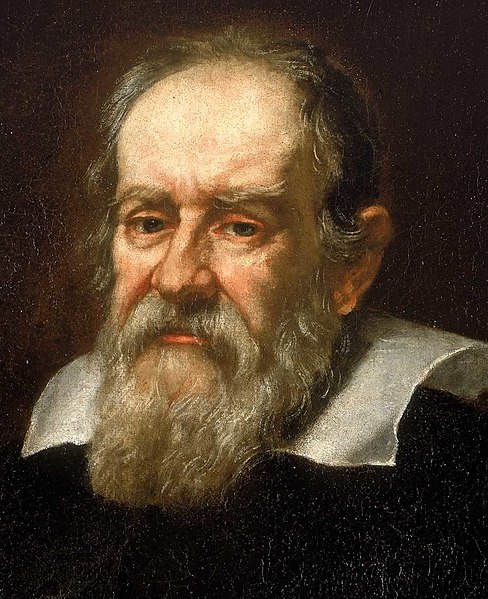

Galileo Galilei

- Nama Lengkap : Galileo Galilei
- Lahir : Pisa, Italia, 15 Februari 1564
- meninggal : Arcetri, Italia , 8 Januari 1642
- Orang Tua : Vincenco Galilei (Ayah),Giula di Cosimo Ammannati (Ibu)
- pasangan: Marnia Gamba
- Anak : Maria Celeste,Vincenzo Gamba,Livia Galilei
Biografi Galileo Galilei
Galileo Galilei dilahirkan di Pisa, Tuscany pada tanggal 15 Februari 1564 sebagai anak pertama dari Vincenzo Galilei, seorang matematikawan dan musisi asal Florence, dan Giulia Ammannati. Ia sudah dididik sejak masa kecil. Kemudian, ia belajar di Universitas Pisa namun terhenti karena masalah keuangan. Untungnya, ia ditawari jabatan di sana pada tahun 1589 untuk mengajar matematika. Setelah itu, ia pindah ke Universitas Padua untuk mengajar geometri, mekanika, dan astronomi sampai tahun 1610. Pada masa-masa itu, ia sudah mendalami sains dan membuat berbagai penemuan.
Pada tahun 1612, Galileo pergi ke Roma dan bergabung dengan Accademia dei Lincei untuk mengamati bintik matahari. Pada tahun itu juga, muncul penolakan terhadap teori Nicolaus Copernicus, teori yang didukung oleh Galileo. Pada tahun 1614, dari Santa Maria Novella, Tommaso Caccini mengecam pendapat Galileo tentang pergerakan bumi, memberikan anggapan bahwa teori itu sesat dan berbahaya. Galileo sendiri pergi ke Roma untuk mempertahankan dirinya. Pada tahun 1616, Kardinal Roberto Bellarmino menyerahkan pemberitahuan yang melarangnya mendukung maupun mengajarkan teori Copernicus.
Galileo menulis Saggiatore pada tahun 1622, yang kemudian diterbitkan pada 1623. Pada tahun 1624, ia mengembangkan salah satu mikroskop awal. Pada tahun 1630, ia kembali ke Roma untuk membuat izin mencetak buku Dialogo sopra i due massimi sistemi del mondo yang kemudian diterbitkan di Florence pada 1632. Namun, pada tahun itu pula, Gereja Katolik menjatuhkan vonis bahwa Galileo harus ditahan di Siena.
Di bulan Desember 1633, ia diperbolehkan pensiun ke vilanya di Arcetri. Buku terakhirnya, Discorsi e dimostrazioni matematiche, intorno à due nuove scienze diterbitkan di Leiden pada 1638. Di saat itu, Galileo hampir buta total. Pada tanggal 8 Januari 1642, Galileo wafat di Arcetri saat ditemani oleh Vincenzo Viviani, salah seorang muridnya.